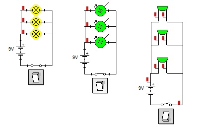

¿Que son los circuitos en paralelo?
Cuando hablamos de un circuito en paralelo o una conexión en paralelo, nos referimos a una conexión de dispositivos eléctricos (como bobinas, generadores, resistencias, condensadores, etc.) colocados de manera tal que tanto los terminales de entrada o bornes de cada uno, como sus terminales de salida, coincidan entre sí.
El circuito en paralelo es el modelo empleado en la red eléctrica de todas las viviendas, para que todas las cargas tengan el mismo voltaje. Si lo entendemos usando la metáfora de una tubería de agua, tendríamos dos depósitos de líquido que se llenan simultáneamente desde una entrada común, y se vacían del mismo modo por un desagüe compartido.
Este tipo de circuitos permiten reparar alguna conexión o dispositivo sin que se vean afectados los demás, y además mantiene entre todos los dispositivos la misma exacta tensión, a pesar de que mientras más dispositivos sean más corriente deberá generar la fuente eléctrica.
Además, la resistencia obtenida de esta manera es menor que la sumatoria de las resistencias del circuito completo: mientras más receptores, menor resistencia.
Fórmulas de un circuito en paralelo
Los valores totales de un circuito en paralelo se obtienen mediante la suma simple.
Las fórmulas para ello son las siguientes:
Intensidad. It = I1 + I2 + I3 … +In
Resistencias. 1/RT = 1/R1 + 1/R2 + 1/ R3… +1/ Rn
Condensadores. Ct = C1 + C2 + C3 … + Cn
Ejemplo de circuito en paralelo
Un perfecto ejemplo de un circuito en paralelo lo constituye una lámpara que tenga varias bombillas encendidas al mismo tiempo.
En caso de que una de dichas bombillas se funda y deje de operar, el flujo eléctrico no se interrumpirá hacia las otras bombillas, que seguirán brillando.
Esto se debe a que cada una posee su propia línea paralela de suministro de energía.
Lo mismo ocurre con el cableado eléctrico de nuestras casas: he allí la razón de que podamos tener un enchufe dañado y usar el siguiente de la pared, o tener una lámpara fundida en la sala y poder encender la del cuarto, por ejemplo.
